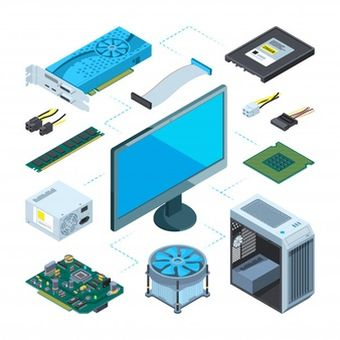

Hardware
Perangkat keras mengacu pada komponen fisik sistem komputer. mencakup perangkat seperti prosesor, memori, penyimpanan, dan input/output periferal.
Software
Perangkat lunak terdiri dari program dan aplikasi yang dijalankan di komputer sistem. Ini mencakup sistem operasi, aplikasi, utilitas, dan alat pengembangan perangkat lunak.